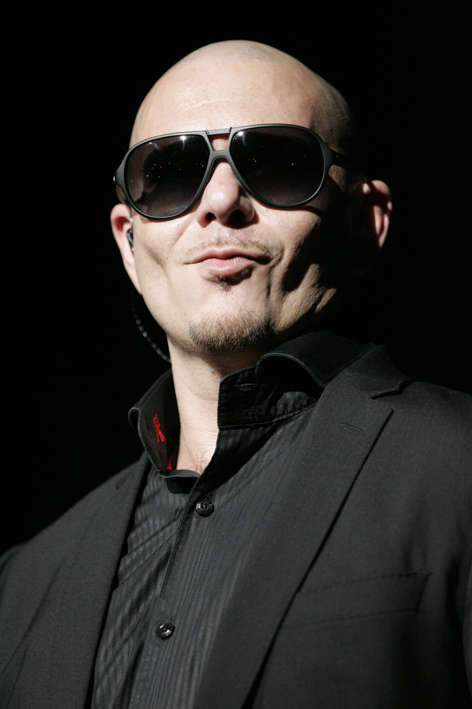
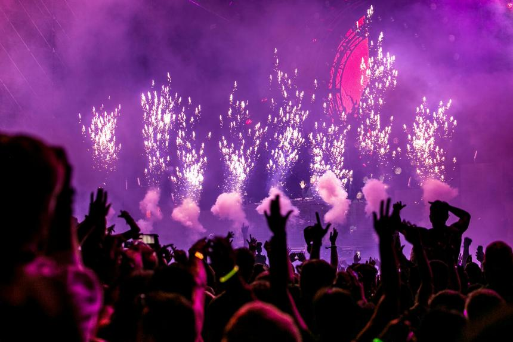

Pitbull
Viernes - Escenario Norte
Mr. Worldwide llega a Ocaso para abrir el festival con sus éxitos más bailables. Una fiesta asegurada desde el primer tema.

Ocaso es un festival de música que empieza cuando se pone el sol y termina cuando vuelve a salir. Durante tres días, el 23, 24 y 25 de julio de 2027, el Recinto Ocaso se convierte en un punto de encuentro para los amantes del pop, el rock y la electrónica.
Tres escenarios, más de 30 artistas y una sola regla: disfrutar del atardecer como si fuera el último. Desde los primeros conciertos con luz dorada hasta las sesiones de madrugada, cada momento del día tiene su propio sonido.
Estos son algunos de los artistas que harán vibrar el recinto este verano. ¡Consulta el programa completo para no perderte nada!

Viernes - Escenario Norte
Mr. Worldwide llega a Ocaso para abrir el festival con sus éxitos más bailables. Una fiesta asegurada desde el primer tema.
Sábado - Escenario Norte
El artista canario que conquistó las listas con "Quédate" protagoniza la noche más esperada del sábado.
Domingo - Escenario Sur
Talento de casa para cerrar el festival. Tinez se sube al escenario en el concierto más especial de esta edición.
El recinto está en la Avenida del Mar 12. Te recomendamos venir en transporte público: es más rápido, más barato y mejor para el planeta.